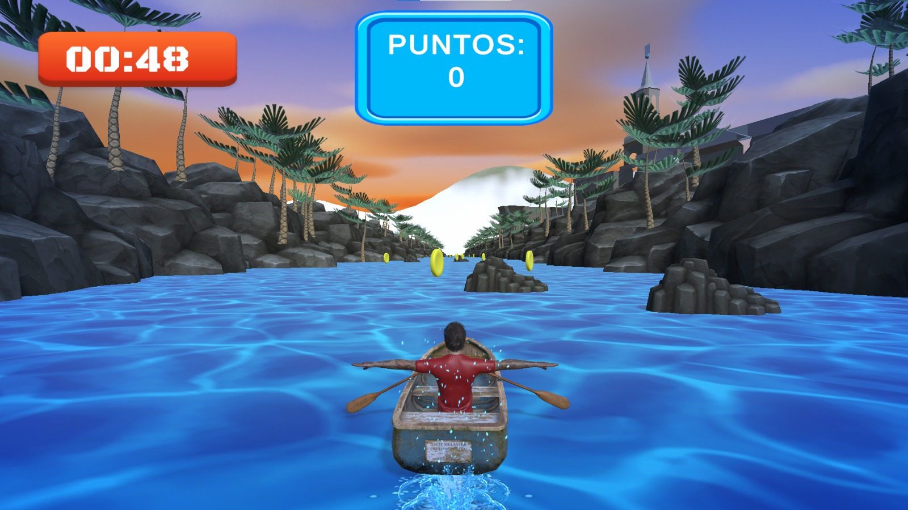
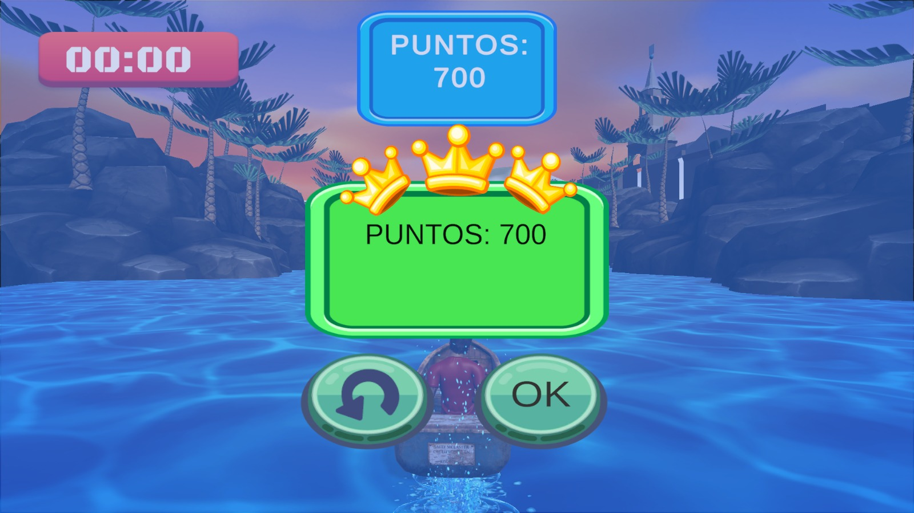
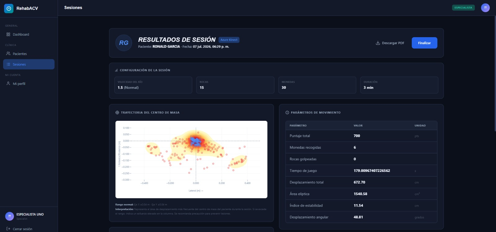

Guía principal y resultados de las pruebas de Sistema realizadas en las oficinas de CITESOFT. Se realizaron en este lugar por necesidades de equipo especial para el proyecto.
La suite de pruebas manuales cubre los principales módulos funcionales del sistema: desde la gestión de sesiones terapéuticas y la integración con Kinect y Unity hasta la visualización de resultados, la gestión de notas clínicas, la generación de reportes PDF y la consulta del historial del paciente. Cada caso de prueba fue diseñado para verificar el correcto funcionamiento de los flujos del sistema, validando las funcionalidades desde la perspectiva del usuario final y asegurando el cumplimiento de los requisitos funcionales establecidos.
Se adjuntan las capturas de pantalla de algunas de las pruebas que se llegaron a realizar en CITESOFT.



Explora el desglose completo de los 24 casos de prueba ejecutados satisfactoriamente.
Se preparan las pruebas para el funcionamiento del código con pruebas que prueben la jugabilidad y sistema como deberían ser normalmente.
| ID | Caso de Prueba | Entrada / Condición | Resultado Esperado | Resultado Real |
|---|---|---|---|---|
| PS-01 | Crear una sesión programada | Especialista configura una nueva sesión con datos válidos | La sesión se crea en estado scheduled |
PASS |
| PS-02 | Pre-chequeo de seguridad | Lanzamiento de una sesión programada | Se muestra la pantalla de pre-sesión con checklist y estado del Kinect | PASS |
| PS-03 | Iniciar sesión con Kinect y Unity | Confirmar inicio de la sesión | Unity se ejecuta y la sesión cambia a in_progress |
PASS |
| PS-04 | Pausar una sesión | Sesión activa en ejecución | El temporizador se detiene y aparece la opción Reanudar | PASS |
| PS-05 | Reanudar una sesión | Sesión previamente pausada | El temporizador continúa desde el tiempo pausado | FAIL |
| PS-06 | Completar una sesión | Finalización de una sesión activa | Se solicita confirmación y la sesión pasa a completed |
PASS |
| PS-07 | Cancelar una sesión programada | Cancelar una sesión en estado scheduled |
La sesión cambia a cancelled |
PASS |
| PS-08 | Botones según estado de sesión | Visualizar la lista de sesiones | Se muestran únicamente las acciones permitidas según el estado | PASS |
| PS-09 | Autocompletado desde Unity | Unity finaliza automáticamente la sesión | La sesión pasa automáticamente a la fase done |
PASS |
Pruebas cuando un proceso se interrumpe a causa del usuario.
| PS-10 | Cancelar una sesión en curso | Cancelar una sesión in_progress |
La sesión cambia a estado cancelled |
PASS |
| PS-11 | Lanzar sesión sin Kinect | Intentar iniciar una sesión con Kinect desconectado | Se muestra advertencia y se permite continuar | FAIL |
Valida el comportamiento de ciertos componentes.
| ID | Caso de Prueba | Entrada / Condición | Resultado Esperado | Resultado Real |
|---|---|---|---|---|
| PS-12 | Temporizador en tiempo real | Sesión en ejecución durante varios segundos | El temporizador avanza correctamente | PASS |
Pruebas de cómo deben ser los resultados al termianr las sesiones o el resultado de varias de estas.
| ID | Caso de Prueba | Entrada / Condición | Resultado Esperado | Resultado Real |
|---|---|---|---|---|
| PS-13 | Resumen de sesión completada | Abrir la vista de resultados | Se muestran correctamente los datos generales de la sesión | PASS |
| PS-14 | Gráfica de trayectoria CoM | Visualizar resultados con datos Kinect | Se renderiza correctamente la gráfica de trayectoria | PASS |
| PS-15 | Gráficas de planos frontal y transversal | Visualizar resultados de la sesión | Se muestran correctamente ambas gráficas con sus alertas | PASS |
| PS-16 | Tabla de parámetros de movimiento | Visualizar resultados de la sesión | La tabla presenta todas las métricas esperadas | PASS |
| PS-17 | Comparativa con sesión anterior | Paciente con al menos dos sesiones completadas | Se muestra la comparación con la sesión previa | PASS |
| PS-18 | Primera sesión sin comparativa | Paciente con una única sesión completada | Se informa que no existe una sesión anterior para comparar | PASS |
| PS-19 | Crear nota clínica | Guardar una nueva nota clínica | La nota queda registrada correctamente | PASS |
| PS-20 | Editar nota clínica | Modificar una nota clínica existente | Los cambios se guardan correctamente | FAIL |
| PS-21 | Descargar reporte PDF | Generar el reporte desde la vista de resultados | Se descarga correctamente el archivo PDF | PASS |
| PS-22 | Registro de generación de PDF | Descargar un reporte PDF | Se registra el evento de generación en el log de trazabilidad | PASS |
Implementa pruebas sobre cómo funcionan los resultados de sesiones cuando hay interrupciones.
| ID | Caso de Prueba | Entrada / Condición | Resultado Esperado | Resultado Real |
|---|---|---|---|---|
| PS-23 | Resultados de sesión cancelada | Visualizar una sesión cancelada | No se muestra la opción Ver resultados |
PASS |
Implementa pruebas sobre cómo funcionan ciertos aspectso del proyecto
| ID | Caso de Prueba | Entrada / Condición | Resultado Esperado | Resultado Real |
|---|---|---|---|---|
| PS-24 | Historial de sesiones del paciente | Abrir la ficha del paciente | Se muestran correctamente todas las sesiones completadas | PASS |
La ejecución de las pruebas fue reveladora ya que se vió de primera mano cómo es que funciona el proyecto en sí, aunque hubo problemas con la ejecución al inicio, se lograron solucionar trayendo estos resultados.